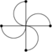

Wallpaper groups
In addition to dihedral groups, cyclic groups as well can be symmetry group of particular figures like the following:
The symmetries that take this figure into itself are the four rotations of: 0, π/2, π and 3π/2 radians.
Not every finite group can be considered a symmetry group of a figure in the plane. We shall show that the only such groups are dihedral groups and cyclic groups. The set of symmetries of the plane forms a group which is E2, the Euclidean group. Traslations are a subgroup, T of E2, and the subset made by rotations with respect the origin and reflections about lines passing through the origin form a subgroup known as orthogonal group, O2, which as we already seen is composed by orthogonal matrices. The subgroup O2 represents the stabilizer of the origin with respect to the natural action of E2 on the plane. The subgroup of rotations of O2, is the special orthogonal group SO2 composed by orthogonal matrices with determinant equal to 1. Every planar isometry is either a rotation followed by a traslation or a reflection followed by a traslation, as the following figure shows:
We shall now classify the subgroups of O2. The following theorem holds:
Theorem 17.19.1 Any finite subgroup of O2(R) is either a cyclic group or a dihedral group, that is either Z
Proof. Let G a non-trivial subgroup of O2. Suppose G is completely contained in SO2, i.e composed entirely by rotations. Let Rφ the matrix representing the counter-clockwise rotation of φ radians, with 0 ≤ φ < 2π. Let Rμ ∈ G such that μ is positive and the least possible angle (such an angle exists since G is finite). For G = SO2, every single real in [0, 2π) occurs, and there is no smallest angle. Since G is a finite proper subgroup of SO2, it posseses the element Rμ, defined above.
For any Rφ ∈ G there exists an integer k such that kμ ≤ φ < (k + 1) μ. But then Rφ − kμ = Rφ ∘ (Rμ)−k is in G, and it results 0 ≤ φ − kμ < μ. In order to respect the minimality of μ, it must result φ − kμ = 0, that is Rφ = (Rμ)k. G is generated by Rμ, and hence cyclic.
Suppose now that G is not contained entirely in SO2 and let N = G ∩ SO2. Since N is composed by matrices of G with determinant equal to 1, its index is |G/N| = 2, and for the first part of the theorem it is cyclic. Let R be a generator of N, and let S an element S ∈ G \ N; S represents a reflection i.e. S ∈ G with det(S) = −1, and thus has order 2. If R = I, then G consists of the only elements I and S, and it is thus cyclic of order 2. Otherwise, let n ≥ 2 the period of R then G has the following elements:
{I, R, R2, ..., Rn − 1, S, RS, R2S, ..., Rn−1S}
with Rn = 1, S2 = 1 and SR = R−1S. G is thus the dihedral group Dn. □
Proposition 17.19.2 A finite subgroup of SO3 is isomorphic to either a cyclic group, a dihedral group or the rotational symmetry group of one of the regular polyhedra (Platonic solids) of which there are only five: the tetrahedron, cube, octahedron, dodecahedron, and icosahedron.